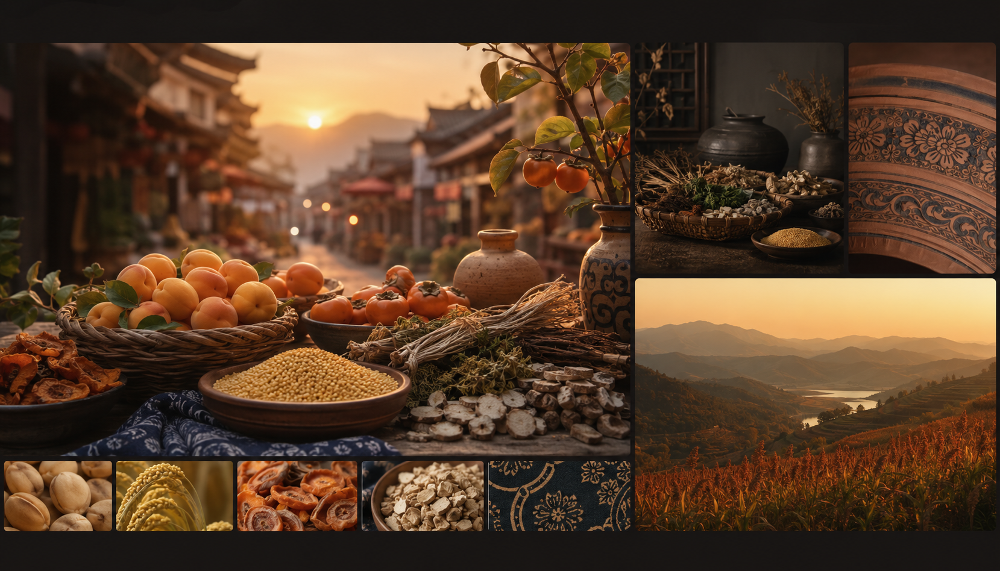
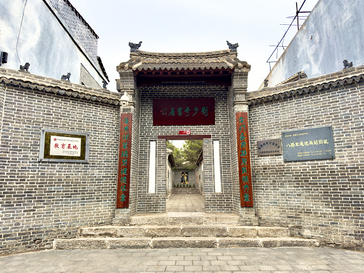

仰韶大杏
以家乡物产作为生活页入口，让宣传从宏大的文化回到具体味道。
 渑池数字志
渑池数字志

Local Life
渑池不只在遗址和峡谷里，也在杏子成熟的季节、街巷的灯光、饭桌上的小米香和人们写下的出行愿望里。
Local Products
仰韶大杏、坻坞小米、牛心柿、丹参、柴胡等名字带着泥土和季节感，也让家乡的形象从风景回到生活。
有人想看丹峡，有人想看彩陶，也有人想带一份特产回家。写下偏好后，一条属于你的渑池计划会立刻浮现。
以家乡物产作为生活页入口，让宣传从宏大的文化回到具体味道。

把地方农产写进网页，是“家乡宣传”最亲切的一部分。

特产信息与山水文化相互补充，形成更完整的县域印象。
Sound And Video
黄河的环境声和丹峡影像把行程从文字里拉出来，像出发前的一次预演。
Message Form
选一个主题、写下日期和留言，让这趟渑池之行先在屏幕上成形。